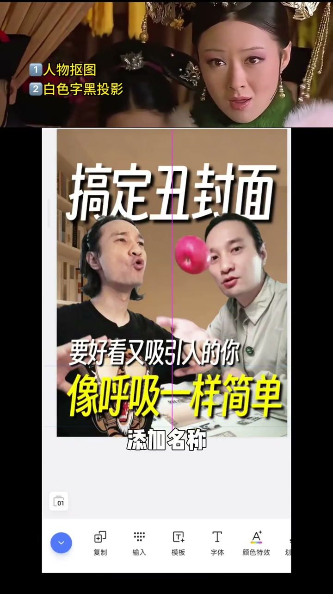
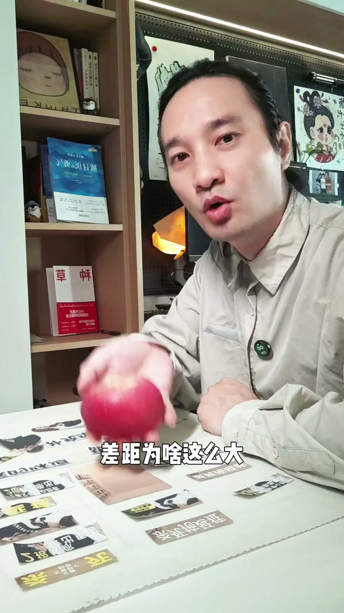

内容要点
[00:00] 你看人物放左右文字上下排
[00:02] 經典的上中下構圖撕板
[00:04] 標題撕個腳
[00:05] 換個標籤
[00:06] 壓腳構圖有衝擊力
[00:07] 字太粗不高級
[00:08] 換個受高的字體
[00:10] 錯位排版
[00:10] 有動感了吧
[00:11] 太亂了
[00:12] 要怎樣
[00:13] 好看又吸引人
[00:14] 文字上下排
[00:15] 點綴深色小字和標籤
[00:17] 聰明的你
[00:18] 換一個能吸引更多人的文案
[00:20] 就解鎖了超現實主義
[00:21] 觀眾看到的東西本身不重要
[00:24] 能讓它成為誰才重要
[00:28] 各位小組接著點贊
[00:29] 走開讓本宮來
[00:30] 加圖把背景跟人物都加上來
[00:33] 點擊構圖
[00:34] 調整下位置大小
[00:37] 選一個免費的字體
[00:38] 非同引白色字
[00:40] 日於人物後面
[00:42] 複製一個改校文案
[00:43] 再來一個換個亮黃色
[00:45] 添加名稱
[00:46] 換個字體和背景的深色
[00:49] 加上一個小標籤方右上角
[00:51] 好啦一起看看
[00:55] 八年我試記了一千多張海報才發現
[00:57] 封面存在的目的就是吸引人
[00:59] 等一下這同樣的選題設計
[01:00] 六千讚和四萬差距為啥這麼大
[01:03] 我們來做個實驗
[01:03] 需求是賣出這個蘋果
[01:05] 為了產品
[01:06] 我們會說它又大又甜
[01:07] 可以補充維生素
[01:08] 為了感覺
[01:09] 我們會說它甜過初戀
[01:11] 小時候的味道
[01:12] 一個封面真正吸引人
[01:13] 不在於你清空了多少工具
[01:15] 而在於喚醒觀眾對美好的想像
[01:17] 先模仿再創新
[01:19] 我們一起前進



